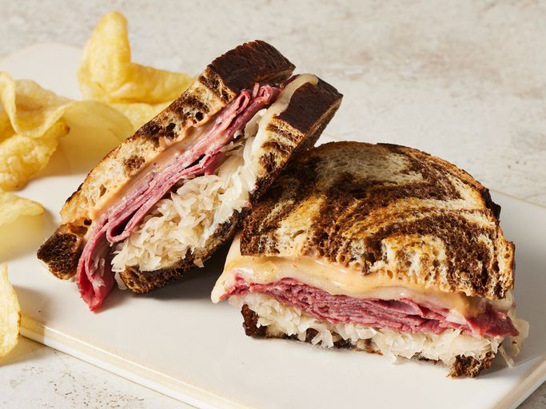

Reuben Sandwich Recipe

Description
A Reuben sandwich is one of my family's fix-it-quick favorites.
They are really delicious and easy to make.
I like to serve them with big bowls of steaming vegetable soup and dill pickles on the side.
Ingredients:
- 8 slices rye bread
- 1/2 cup Thousand Island dressing
- 8 slices Swiss cheese
- 8 slices deli slices corned beef
- 1 cup sauerkraut, drained
- 2 tablespoons butter,softened
Steps:
- Gather all Ingredients
- Spread Thousand Islands on each bread
- Apply Swiss Cheese on all bread
- Cook bread on the pan
Home Page